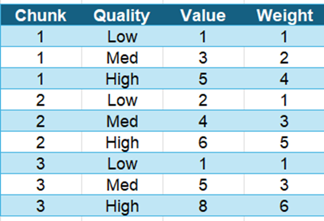

Playback Buffer Optimization
Once you have finally found a title you seem interested in, you can click play to start watching it. Netflix must now decide which video chunks (at varying quality levels) to download first so you avoid buffering issues.
Dynamic programming can be applied here using a Knapsack-like
model to optimize which video segments to buffer at which quality,
given bandwidth constraints.
- Chunks: next N video segments (e.g. 3 segments in the example)
- Options per chunk: each segment has multiple quality levels
- Value: perceived quality score (higher = better)
- Weight: bandwidth cost (bytes)
- Budget: your estimated bandwidth × buffer window (e.g. 7 units)
- Goal: pick exactly one quality option per chunk to maximize total quality under the bandwidth limit.
Goal: Maximize total quality of buffered chunks under the
bandwidth "budget."

GIF Source:
Wikimedia Commons
Scenario Example

- Bandwidth budget: Netflix estimates your current connection can sustain 10 "units" worth of downloads over the next buffer window.
- Video chunks: We look ahead at the next 5 segments of the video, each available in different quality levels.
Budget = 7
- You must choose one option for each chunk (you can't skip a segment).
- The DP will find the combination (e.g. Chunk 1→High, Chunk 2→Med, Chunk 3→Med) that fits under 7 and yields the highest sum of values.
Python implementation of the DP approach:
Show Python Code
# chunk_options[i] = list of (value, weight) for chunk i (1-indexed)
chunk_options = {
1: [(1,1), (3,2), (5,4)],
2: [(2,1), (4,3), (6,5)],
3: [(1,1), (5,3), (8,6)],
}
budget = 7
num_chunks = 3
# dp[i][b] = max quality using chunks 1..i with budget b
dp = [[0]*(budget+1) for _ in range(num_chunks+1)]
for i in range(1, num_chunks+1):
for b in range(budget+1):
best = 0
for value, weight in chunk_options[i]:
if weight <= b:
best = max(best, dp[i-1][b-weight] + value)
dp[i][b] = best
print("Max total quality:", dp[num_chunks][budget])
Efficiency Analysis:
Time: O(N × B × M) N = number of chunks, B = budget (discrete units), M = number of quality options per chunk
Space: O(N × B)
By modeling your buffer as a multiple-choice knapsack, Netflix ensures
every segment is fetched at the best possible quality given your
connection. This dynamic selection maximizes viewing experience while
avoiding rebuffering.
Time: O(N × B × M) N = number of chunks, B = budget (discrete units), M = number of quality options per chunk
Space: O(N × B)